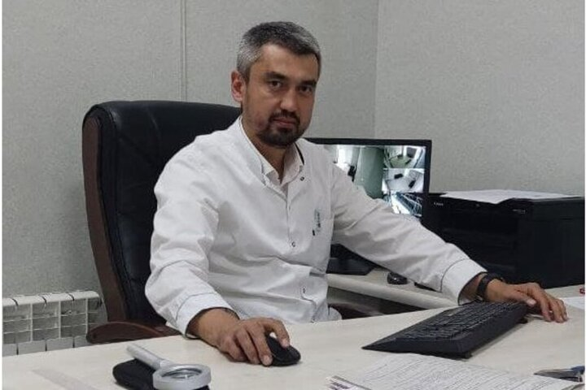

Murod Abdujabborovich
Yuqori malakali dermatovenerolog
| Shaxsiy malumotlar | |
| Tug`ilgan kun: | 18 noyabr 1983 yil. |
| Ta'lim | |
| 2000-2007 | Toshkent tibbiyot akademiyasi Fakultet: davolash Mutaxassisligi: Umumiy tibbiyot |
| 2007-2010 | Dermatovenerologiya magistri |
| Tajriba: | |
| 2010 | Respublika teri-tanosil kasalliklari klinik shifoxonasi statsionar shifokori |
| Ilmiy ish: | |
| Psoriazni tashxislash va davolashning zamonaviy usullari | |
| Kengaytirilgan malakalar: | |
| 2015 | Teri kasalliklarini laboratoriya diagnostikasining yangi usullari |
| 2017 | Diagnostika va davolashning zamonaviy usullari keng tarqalgan kasalliklarning koynyks |
| Kategoriya: | |
| Yuqori | |
| Nashrlar: | |
| 11 ta ilmiy maqola, 6 ta tezis | |
| Til bilishi: | |
| Ingliz tili - o`rtacha Rus tili - erkin O`zbek tili - erkin |
|